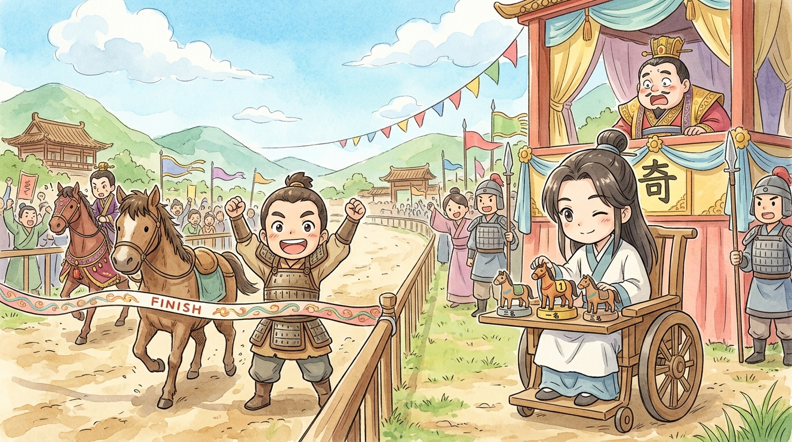
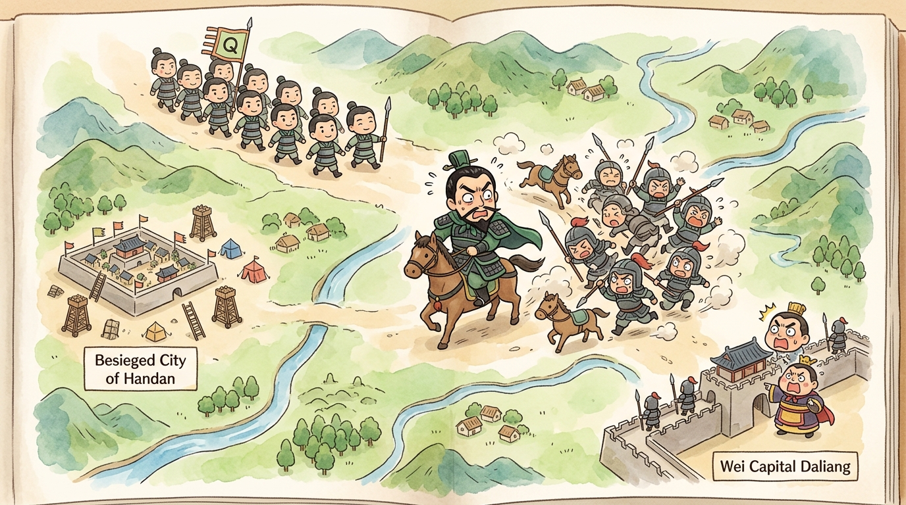
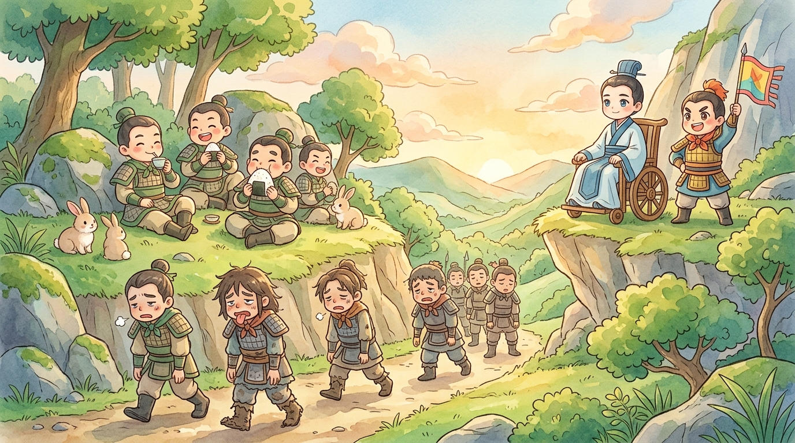

Welcome, players, to the REPLAY BOOTH! Tonight we're loading one of the most famous strategy-game moves in human history — a move so good it became a Chinese idiom AND the second of the legendary Thirty-Six Stratagems (三十六計).1 The year is 354 BCE, deep in the Warring States period (戰國時代), when seven great kingdoms fought like seven players crowded around one board.2 Load the map. Dim the lights. Let's study how a man who couldn't walk made an entire army run in circles.
🎮 Meet the players (and the grudge)
First, the backstory the game lobby is gossiping about. Sun Bin (孫臏) and Pang Juan (龐涓) were once classmates (同學), studying the art of war under the same legendary master.3 Pang Juan graduated first and became the star general of Wei (魏) — but he knew, deep down, that his friend was the better student. So when Sun Bin came to visit, Pang Juan did something truly wicked: he framed his old friend for a crime, and had his kneecaps removed so he could never walk — or, Pang Juan assumed, never command an army — again.
Big mistake. Enormous. Sun Bin escaped to the eastern kingdom of Qi (齊) hidden in a diplomat's cart, where the general Tian Ji (田忌) discovered that this quiet man in the wheeled chair could see a battlefield the way a hawk sees a mouse. (Ask him about horse racing sometime — Sun Bin once won Tian Ji a royal bet without making his horses any faster, just by changing which horse raced which.4 That's our player. Remember his style: never fight strength with strength.)

🎮 The board: Zhao is one move from losing
Now — the match. Pang Juan leads Wei's unstoppable army north and surrounds (包圍) Handan (邯鄲), capital of Zhao (趙). Zhao sends a desperate message to Qi: HELP! And here's the obvious move, the one 99 players out of 100 would make: march the Qi army straight to Handan and fight Pang Juan there.
Tian Ji reaches for exactly that move. And Sun Bin, from his chair, says: "Stop. Think about untangling a knot. Do you yank the tangled threads harder? No — you find the loose end and pull gently, somewhere else."
March to Handan and we fight Wei's BEST troops, fresh, dug in, at a place of THEIR choosing — after exhausting our own legs to get there. Terrible trade. Now flip the board: where is Wei's army NOT? …At home. Pang Juan took the kingdom's finest soldiers north, leaving the capital Daliang (大梁) guarded by old men and cooks. The king of Wei sits there, soft as an egg with no shell. So — we don't run to where the enemy IS strong. We stroll to where he is WEAK, and make HIM do all the running.
🎮 The move: attack the empty house
So the Qi army ignores Handan completely and marches instead toward Daliang, the capital (首都) of Wei itself, announcing its coming loudly. Watch the replay map, players — watch what one arrow pointed at the RIGHT square does to the whole board.
In Handan's siege camp, a messenger gallops in, pale as rice: "General Pang! Qi is attacking DALIANG! The king commands you home — NOW!" And Pang Juan's beautiful siege, a whole year of engineering and effort, evaporates in an afternoon. He has no choice at all: no general survives losing his own king. His weary army drops everything, turns around, and force-marches south — day and night, no rest, no hot meals, boots falling apart — to save their own homes. The siege of Handan is over without Qi fighting a single soldier at Handan. Zhao is saved by an army that never went there.5

🎮 The finisher: the toll gate at Guiling
But wait — Sun Bin's move has a second half, and this is what separates good players from legends. He never intended to actually capture Daliang. The march on the capital was the bait (誘餌). The real move was this: Pang Juan's route home is predictable — there's only one sensible road — and his army will arrive on it exhausted (疲倦), hungry, strung out, and furious. So Sun Bin parks the fresh, well-fed Qi army at a narrow place along that road called Guiling (桂陵)… and waits. Comfortably. Possibly with snacks.
Pang Juan's stumbling columns walk straight into the ambush (埋伏). The "unstoppable" army of Wei, which no state dared face head-on, is smashed at Guiling by soldiers who barely had to march at all. GAME. SET. MATCH.6

🎮 Post-game analysis
Let's break down why this replay is still studied 2,400 years later. Sun Bin never asked the beginner's question — "How do I win the fight?" He asked the master's question: "How do I make the fight I want, happen?" He attacked what the enemy HAD to protect, which handed him control of the enemy's legs. He chose where the battle would happen, and when, and how tired each side would be when it started. The actual fighting was the last and smallest step — the score had been decided by the geometry.
Bonus replay tip: the waiting-at-Guiling half of the move is a classic in its own right — the masters call it "wait at ease for the exhausted enemy" (以逸待勞), and yes, it's ALSO one of the Thirty-Six Stratagems. Sun Bin stacked two legendary moves into one turn. That's why this replay gets studied in war academies, chess clubs and business schools alike: it's the cleanest example ever recorded of winning a battle before it starts.
One more thing, players. Notice WHO made this move: the man Pang Juan crippled so he could "never command an army." Pang Juan took his classmate's legs and made an enemy of the one mind he should have feared. Cruelty (殘忍), players, is always bad strategy.
The idiom 圍魏救趙 — "surround Wei to save Zhao" — now means solving any problem from the flank instead of head-on. A friend is being teased and arguing makes it worse? Change what the teaser cares about — an audience that stops laughing. Can't beat a level's boss? Maybe the level has a different door. Whenever you're stuck pushing against something hard, hear Sun Bin from his chair: "Stop pulling the knot. Find the loose thread." REPLAY SAVED. 🎮